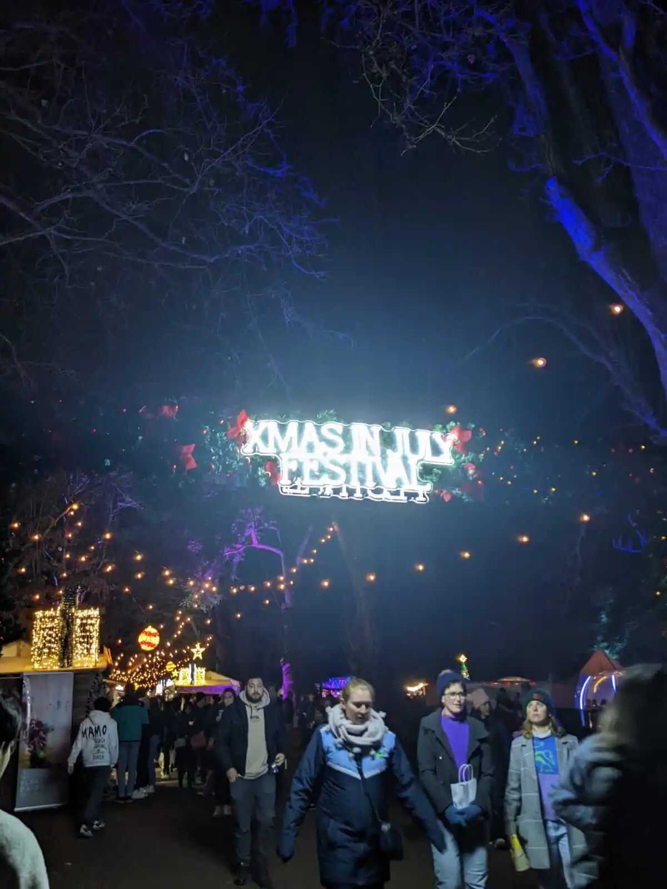
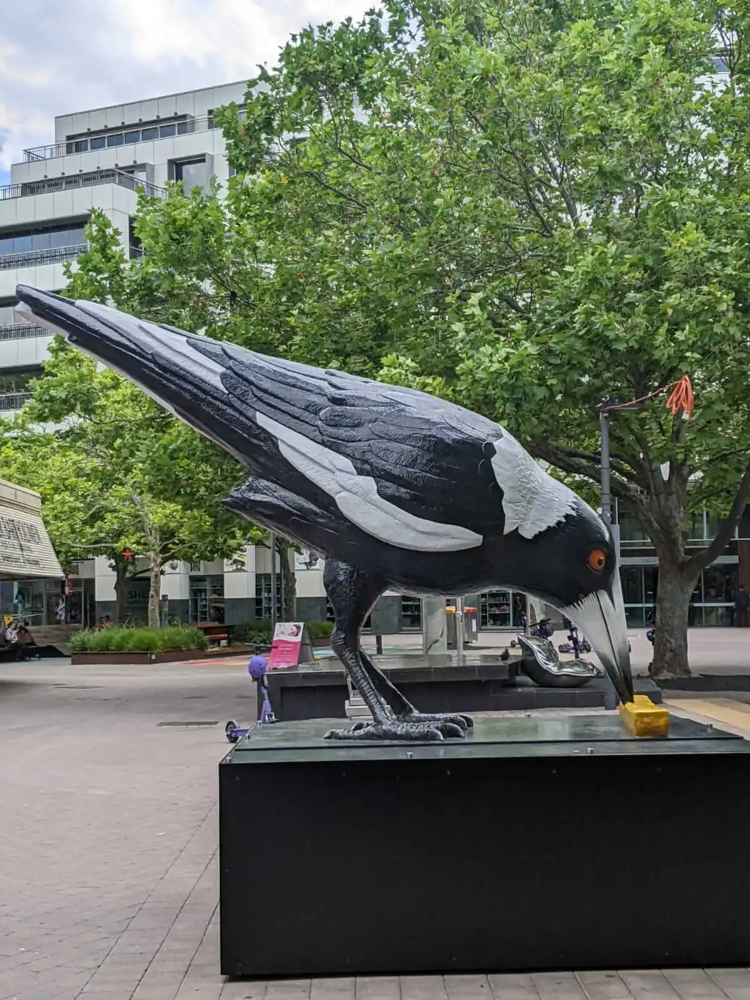
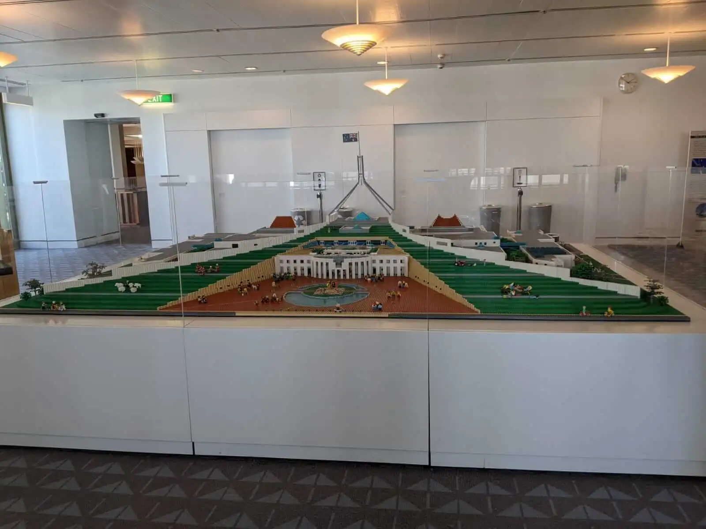
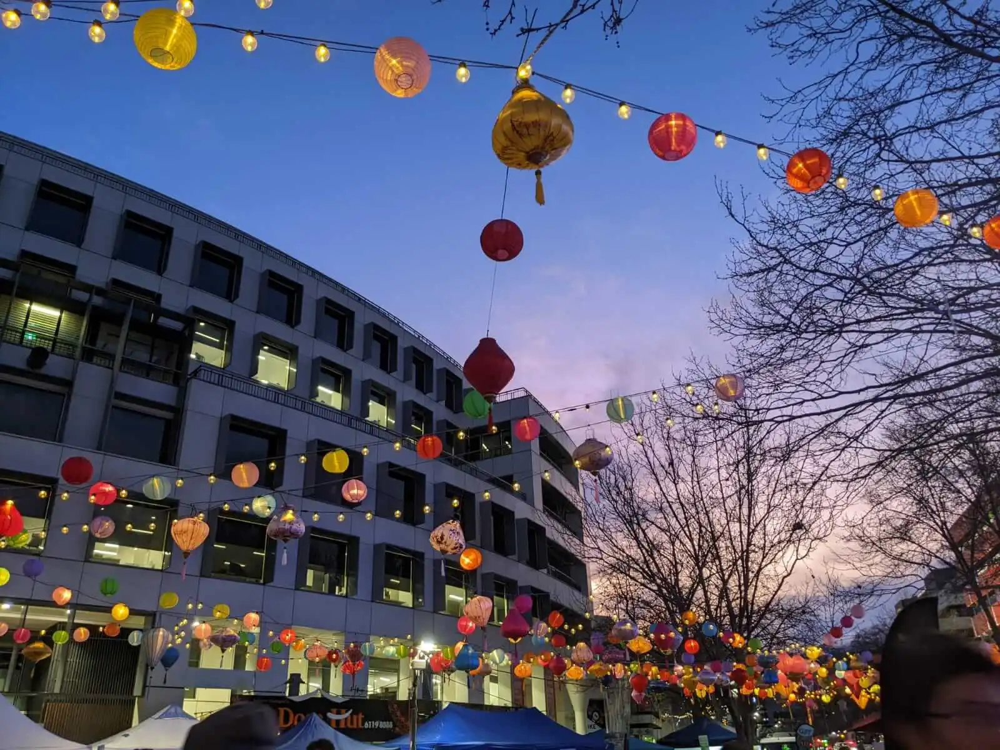
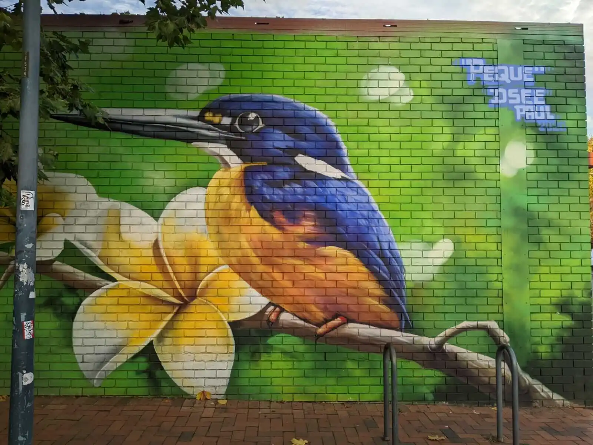
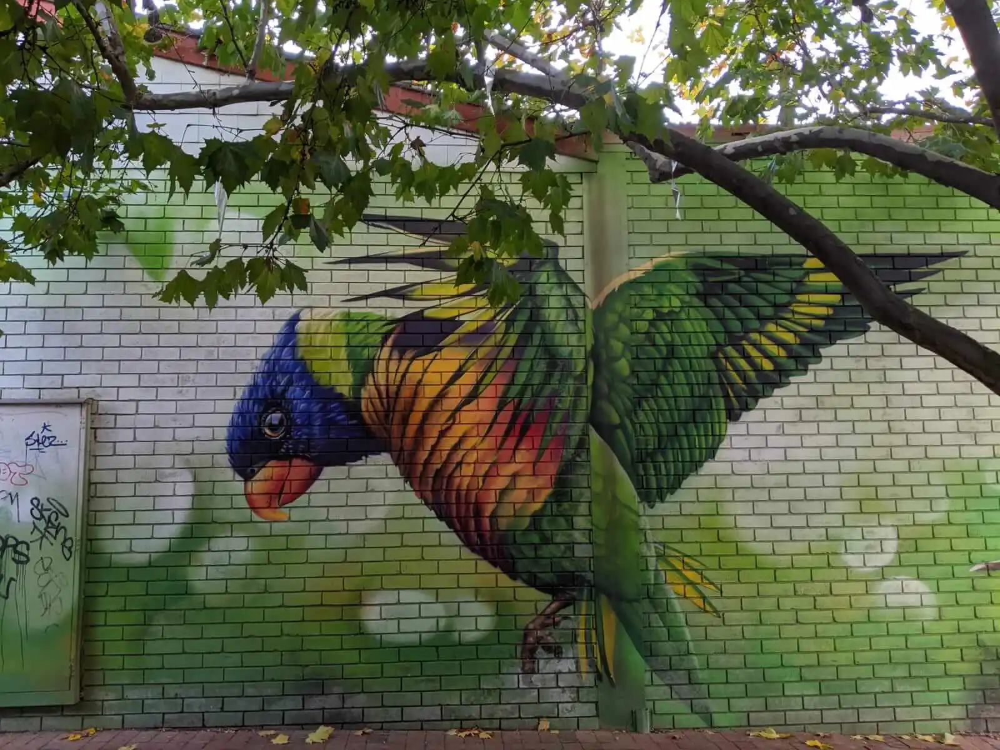

Discover
Parliament House
Parliament House - close up

Xmas in July Festival

Magpie Sculpture in Canberra CBD

Parliament House - lego version.

Chinese Mid-Autumn Festival - Canberra CBD
Japanese Lantern Festival

Wallpainting of a Kookaburra - Woolworth, Dikson Area

Wallpainting of a Parakeet - Woolworth, Dikson Area